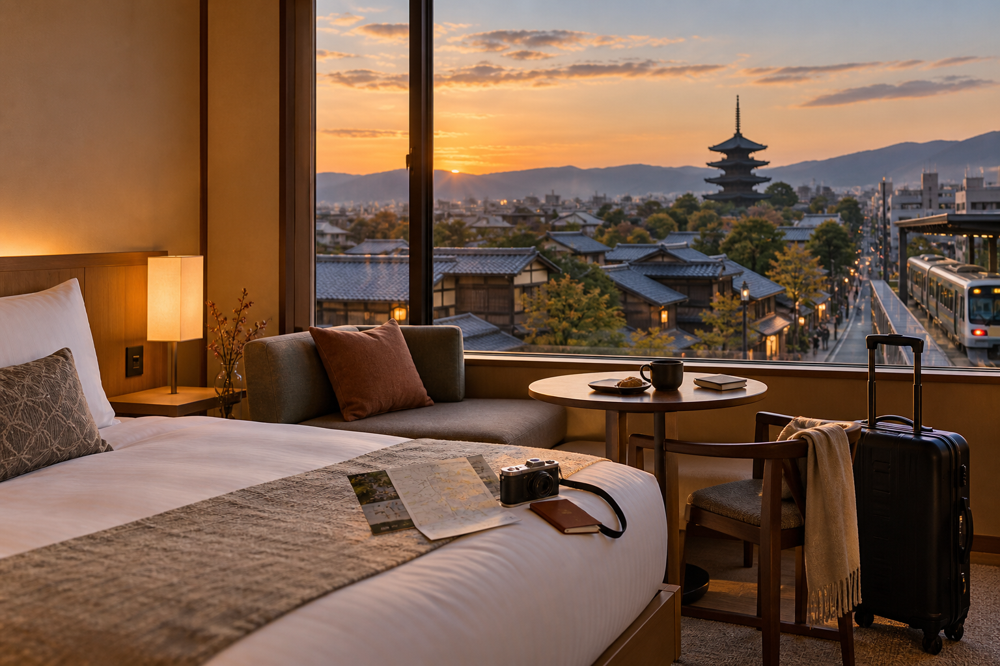
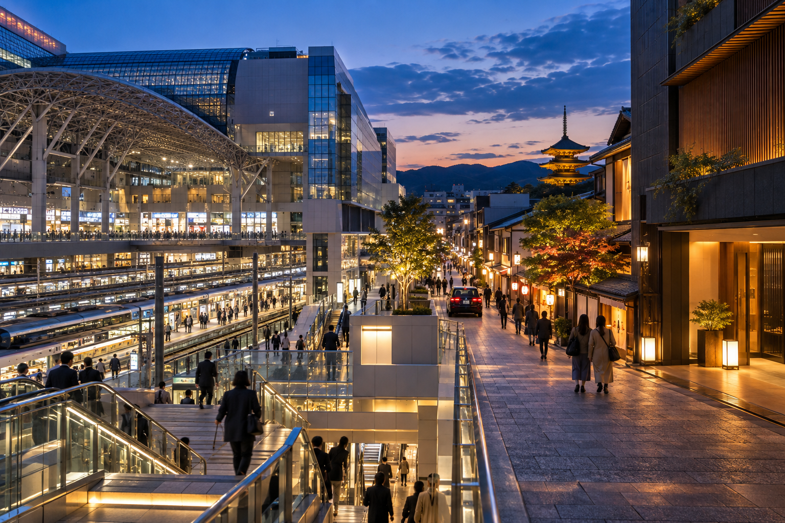
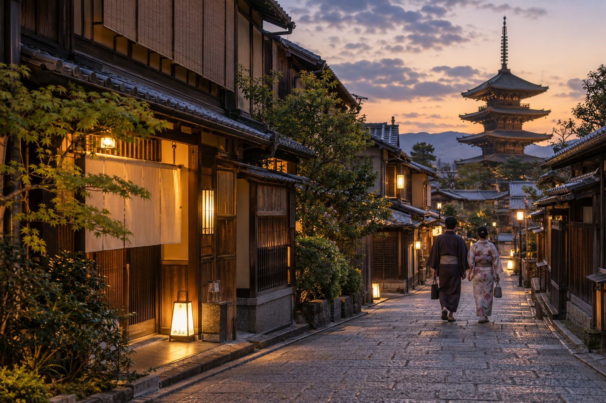

Where to Stay in Kyoto: Best Areas for First-Time Visitors
Choosing where to stay in Kyoto affects much more than your hotel room. Kyoto's main sights are spread across the city, and the best base can reduce crowded bus journeys, simplify early-morning sightseeing, make dinner easier, and save time when arriving from Tokyo or continuing to Osaka.
There is no single neighborhood that is best for every first-time visitor. Kyoto Station is excellent for train connections and luggage. Downtown Kyoto gives you a strong balance of transport, restaurants, shopping, and evening activity. Gion and Higashiyama provide the most traditional atmosphere and place you close to some of Kyoto's most famous historic streets.
This guide compares the best Kyoto areas based on transport, sightseeing convenience, atmosphere, food, families, budget tendencies, and wider Japan travel plans. Choose the area first, then compare individual hotels inside it.
Best Areas to Stay in Kyoto at a Glance

| Area | Best For | Main Advantage | Main Trade-Off |
|---|---|---|---|
| Kyoto Station | First visits, short stays, Shinkansen , luggage | Excellent transport and onward travel | Less traditional atmosphere |
| Downtown Kyoto / Kawaramachi | Best overall balance, dining, shopping | Central evenings and useful transport | Busy and less historic than Gion |
| Gion / Higashiyama | Traditional Kyoto atmosphere, couples | Walkable historic eastern Kyoto | Often pricier and less convenient for some cross-city trips |
| Shijo-Karasuma | Central convenience, transport, quieter nights | Subway access and central position | More busi ness-like atmosphere |
| Arashiyama | Scenery, slower stays, couples | Beautiful western Kyoto setting | Poor choice for most citywide sightseeing |
| Northern Kyoto | Repeat visitors, quieter trip | Calm surroundings | Less practical for a short first visit |
| Fushimi | Sake, local atmosphere, southern Kyoto | Strong southern access | Too far from several first-time sights |
For most first-time visitors, I would narrow the decision to:
Kyoto Station
Downtown Kyoto / Kawaramachi
or:
Gion / Higashiyama
Then choose based on how you travel.
What Matters Most When Choosing a Kyoto Hotel Area?
A famous neighborhood name should not be your first filter.
I would check these factors first.
1. Distance from Useful Transport
A hotel that is:
3–5 minutes from a useful station
can be more practical than a more atmospheric property requiring a 15-minute walk every morning and evening.
Kyoto sightseeing involves considerable walking already.
There is little benefit in adding unnecessary hotel walking.
2. Which Parts of Kyoto You Plan to Visit
A normal first visit may include:
- ✓Fushimi Inari
- ✓Kiyomizu-dera
- ✓Gion
- ✓Arashiyama
- ✓Kinkaku-ji
- ✓Nijo Castle
- ✓Nishiki Market
These places are not in one small district.
No hotel puts you beside all of them.
Your goal is therefore not:
“Stay next to every attraction.”
It is:
“Choose a base with useful connections to several areas.”
3. Arrival and Departure Logistics
Consider where Kyoto sits inside your wider Japan trip.
For example:
Tokyo → Kyoto → Osaka
creates different priorities from:
Osaka → Kyoto → Tokyo
If you arrive and depart by Shinkansen with large luggage, Kyoto Station becomes more attractive.
If you stay longer and want atmospheric evenings, Downtown or Gion may be worth the extra transfer.
4. What You Want After Sightseeing?
Think about 7 PM, not only 8 AM.
Do you want to step outside your hotel and find?
- ✓Restaurants
- ✓Cafes
- ✓Bars
- ✓Shopping
- ✓Quiet streets
- ✓Traditional architecture
This can change the best area substantially.
5. How Early You Want to Sightsee?
Kyoto rewards early starts.
If you want to walk around Higashiyama before the main daytime crowds, staying nearby can be valuable.
If you want an early train toward Fushimi Inari or Arashiyama, a transport-focused base may work better.
6. Luggage
Kyoto sightseeing is not pleasant with a large suitcase.
If your itinerary includes:
- ✓Shinkansen
- ✓Hotel changes between cities
- ✓Luggage forwarding
- ✓Station storage
the location of your hotel relative to major transport becomes important.
7. Your Trip Length
For:
2 nights
I would value logistics heavily.
For:
4–5 nights
I would give more weight to neighborhood atmosphere and evening quality.
The longer you stay, the more often you experience the streets around your hotel.
Kyoto Station: Best for Transport, Short Stays and First-Time Logistics

For many first-time visitors, Kyoto Station is the easiest base to understand.
It is Kyoto's main long-distance transport hub and is especially useful if your Japan route includes:
- ✓Tokyo
- ✓Osaka
- ✓Hiroshima
- ✓Other Shinkansen destinations
- ✓Kansai International Airport
The area also provides restaurants, shops, convenience stores, and a large range of accommodation.
Kyoto's official tourism office specifically highlights the station area for its strong JR access to places such as Fushimi Inari, Tofuku-ji, and Arashiyama, as well as plentiful luggage storage.
Who Should Stay Near Kyoto Station?
Kyoto Station is especially strong for:
- ✓First-time visitors
- ✓Two-day Kyoto trips
- ✓Travelers arriving from Tokyo
- ✓Travelers continuing by Shinkansen
- ✓Families with luggage
- ✓Travelers using Kyoto as a wider Kansai base
- ✓Early departures
- ✓Late arrivals
It is one of the most practical choices on the entire list.
Main Advantage: Easy Arrival
Imagine arriving from Tokyo after several hours of travel.
Hotel Near Kyoto Station
You leave the train and may reach the hotel within minutes.
Hotel in Higashiyama
You may still need:
- ✓Subway
- ✓Train
- ✓Bus
- ✓Taxi
- ✓Walking
Neither option is wrong.
But after a long travel day, the station option is simpler.
Main Advantage: Easy Departure
This becomes even more useful when Kyoto is not your final destination.
If you continue:
Kyoto → Hiroshima
or:
Kyoto → Tokyo
you can reduce the amount of luggage movement on departure day.
A hotel near the station also makes it easier to:
- ✓Leave bags after check-out
- ✓Sightsee
- ✓Return for luggage
- ✓Board your onward train
Strong Access to Fushimi Inari
Fushimi Inari is one of the easiest major Kyoto sights to reach from the Kyoto Station side.
This works particularly well with early sightseeing.
You can leave the hotel, use rail, and reach southern Kyoto without depending on a long sightseeing bus journey.
Strong Access to Arashiyama
JR services also make the station area practical for reaching Saga-Arashiyama.
That is useful for the western-Kyoto day in our itineraries.
Again, the station's strength is not that every attraction is nearby.
Its strength is that multiple parts of Kyoto are relatively easy to reach.
Kyoto Station Has Plenty of Food
Do not assume you will be trapped in a transport district with nothing to eat.
The station complex and nearby streets include:
- ✓Restaurants
- ✓Cafes
- ✓Food halls
- ✓Convenience stores
- ✓Department-store dining
- ✓Casual meals
This is useful after a long sightseeing day when you do not want another journey simply for dinner.
Hotel Choice Is Broad
The station area includes:
- ✓Business hotels
- ✓Mid-range hotels
- ✓Larger hotels
- ✓Higher-end properties
- ✓Budget options
Kyoto's tourism office notes that the area has a large supply of bigger and business-style hotels and can sometimes provide more availability than the most atmospheric districts.
Main Disadvantage: Less Traditional Atmosphere
This is the biggest trade-off.
When you step outside Kyoto Station, you see:
- ✓Modern buildings
- ✓Roads
- ✓Hotels
- ✓Commercial development
You do not immediately get the classic:
- ✓Machiya streets
- ✓Tea houses
- ✓Historic lanes
associated with Gion and Higashiyama.
For some travelers, that does not matter.
For others, it changes the emotional quality of the stay.
Kyoto Station at Night
The area remains practical in the evening.
But if your ideal Kyoto evening means:
historic lanes → river → small restaurants → Gion
the station area is less atmospheric.
You may spend the evening downtown and return later.
That adds one final transport journey.
Kyoto Station for Families
This is one of my strongest family choices.
Families may benefit from:
- ✓Easy luggage handling
- ✓Simple arrival
- ✓Train access
- ✓Restaurants
- ✓Convenience stores
- ✓Less need to drag bags through historic streets
If children are already tired from a Tokyo-to-Kyoto travel day, this convenience becomes valuable.
Kyoto Station for Couples
It still works well, especially if:
- ✓Your trip is short
- ✓Transport matters
- ✓You have a premium hotel
- ✓You plan atmospheric evenings elsewhere
But couples prioritizing neighborhood character may prefer Downtown or Gion.
Kyoto Station for a 2-Day Kyoto Trip
For only two full days, Kyoto Station is a very strong choice.
You have less time to absorb inconvenient arrival and departure logistics.
Our short Kyoto routes move across several parts of the city, so staying beside one historic attraction does not automatically save more time.
Kyoto Station for a 3-Day Kyoto Trip
Still excellent.
The station provides useful starting access for:
- ✓Fushimi
- ✓Arashiyama
- ✓Central transport
But with three or more nights, Downtown Kyoto becomes more competitive because you also have more evenings to enjoy.
Who Should Avoid Kyoto Station?
Consider another area if:
- ✓Traditional atmosphere is one of your top priorities
- ✓You want to walk around Gion early and late
- ✓Dining and evening streets matter more than Shinkansen convenience
- ✓Your arrival/departure logistics are simple
In those cases, Downtown or Higashiyama may provide a more memorable base.
Downtown Kyoto: Best Overall Balance for Many First-Time Visitors
If Kyoto Station wins on logistics, Downtown Kyoto may win on balance.
The broad central area around:
- ✓Shijo-Kawaramachi
- ✓Kawaramachi
- ✓Shijo-Karasuma
- ✓Nishiki Market
- ✓Teramachi
- ✓Kamo River
places you between several parts of the city rather than at one edge of the sightseeing map.
Kyoto's official accommodation guidance specifically highlights the Shijo-Kawaramachi and Shijo-Karasuma areas for transport, dining, shopping, and access toward Gion and Nishiki Market.
Why Downtown Kyoto Works So Well
A first-time visitor needs more than proximity to attractions.
You also need:
- ✓Breakfast
- ✓Dinner
- ✓Transport
- ✓Shopping
- ✓Convenience stores
- ✓Evening options
Downtown handles all of these well.
Best For
Downtown Kyoto is especially good for:
- ✓First-time visitors
- ✓Couples
- ✓Solo travelers
- ✓Food-focused travelers
- ✓Shoppers
- ✓Travelers staying three or more nights
- ✓Visitors wanting evenings outside the hotel
Access to Gion
From the Kawaramachi side, Gion is close enough to reach easily.
This is a major advantage.
You can:
- ✓Spend the day elsewhere
- ✓Return downtown
- ✓Eat
- ✓Walk toward Gion or Kamo River
without treating every evening as another formal excursion.
Access to Nishiki Market
Nishiki Market sits in central Kyoto.
Staying nearby means you can visit without building an entire transport plan around it.
You may also walk through surrounding:
- ✓Shopping arcades
- ✓Cafes
- ✓Department stores
- ✓Restaurants
before or afterward.
Strong Evening Convenience
This is where Downtown clearly beats Kyoto Station for many travelers.
After a full day in:
- ✓Arashiyama
- ✓Fushimi
- ✓Kinkaku-ji
you can return to an area filled with:
- ✓Restaurants
- ✓Bars
- ✓Cafes
- ✓Shops
- ✓Riverside walks
You do not necessarily need to plan dinner in advance.
Shijo-Kawaramachi vs Shijo-Karasuma
These areas are close but slightly different.
Shijo-Kawaramachi
Better for:
- ✓Shopping
- ✓Restaurants
- ✓Gion access
- ✓Kamo River
- ✓More evening activity
Shijo-Karasuma
Better for:
- ✓Subway access
- ✓Business-style convenience
- ✓Slightly quieter surroundings
- ✓Central positioning
For many tourists, Kawaramachi feels more immediately interesting.
For travelers prioritizing transport and a calmer hotel block, Karasuma can be excellent.
Downtown Kyoto and Public Transport
Depending on the exact hotel, you may have access to:
- ✓Kyoto City Subway
- ✓Hankyu Railway
- ✓Keihan Railway nearby
- ✓Buses
- ✓Taxis
That makes central Kyoto flexible.
No single line reaches every attraction, but you have multiple options.
Main Disadvantage: You Are Not Beside the Shinkansen
If you arrive with large luggage, you still need to get from Kyoto Station to your hotel.
That transfer is not difficult, but it exists.
Likewise, departure morning requires returning to the station if you continue by Shinkansen.
For a two-night stay, that may matter more.
For four nights, it matters less.
Main Disadvantage: Busy Streets
Downtown is active.
If your hotel sits close to:
- ✓Major roads
- ✓Entertainment
- ✓Shopping streets
you may experience more:
- ✓Pedestrian traffic
- ✓Street noise
- ✓Evening activity
Read recent hotel reviews rather than judging the entire district as noisy or quiet.
Exact street location matters.
Downtown Kyoto for Families
Very good.
Families have access to:
- ✓Restaurants
- ✓Shops
- ✓Department stores
- ✓Transport
- ✓Easy food options
Choose a quieter hotel street if early bedtimes matter.
Downtown Kyoto for Couples
Excellent.
It combines:
- ✓Dining
- ✓River access
- ✓Gion proximity
- ✓Evening atmosphere
without requiring you to pay specifically for a Gion address.
Downtown vs Kyoto Station
This may be the most important accommodation comparison.
Choose Kyoto Station If:
- ✓Your trip is short
- ✓You have substantial luggage
- ✓Shinkansen convenience matters
- ✓You arrive late or depart early
- ✓Logistics come first
Choose Downtown If:
- ✓You want stronger evenings
- ✓Restaurants matter
- ✓You stay three or more nights
- ✓You want a more central sightseeing position
- ✓You like walking after dinner
For many first-time couples, I would lean toward:
Downtown Kyoto
For travelers on a fast multi-city Japan route, I would strongly consider:
Kyoto Station
Gion and Higashiyama: Best for Traditional Kyoto Atmosphere

If your priority is waking up somewhere that feels unmistakably like Kyoto, look seriously at Gion and Higashiyama.
This area places you close to:
- ✓Historic streets
- ✓Yasaka Shrine
- ✓Kiyomizu area
- ✓Traditional restaurants
- ✓Tea-house districts
- ✓Eastern Kyoto temples
Kyoto's official tourism office describes Gion/Higashiyama as an area with long-established ryokan, traditional dining, historic streets, and many of Kyoto's major eastern attractions.
Why Stay in Gion or Higashiyama?
The biggest advantage is not transport.
It is experience.
You may be able to explore certain streets:
- ✓Earlier in the morning
- ✓Later in the evening
when the largest daytime visitor flows are lower.
That can make a major difference in a highly visited part of Kyoto.
Best For
Gion/Higashiyama works especially well for:
- ✓Couples
- ✓Honeymoons
- ✓Special trips
- ✓Traditional atmosphere
- ✓Photography
- ✓Early Higashiyama sightseeing
- ✓Ryokan stays
- ✓Travelers who value neighborhood character
Morning Advantage
Imagine wanting to walk around Higashiyama early.
From Kyoto Station
You wake up, prepare, travel across Kyoto, then begin sightseeing.
From Higashiyama
You may already be within walking distance.
That gives you a meaningful advantage if eastern Kyoto is one of your trip priorities.
Evening Advantage
The same applies after daytime sightseeing.
Once many day visitors leave, you can still be near:
- ✓Gion
- ✓Yasaka area
- ✓Historic streets
- ✓Restaurants
without making another trip across the city.
This is one of the strongest reasons to pay more for the area.
Ryokan and Traditional Accommodation
Gion and Higashiyama can be good places to look for:
- ✓Ryokan
- ✓Machiya-style lodging
- ✓Boutique properties
- ✓Luxury hotels
This can make the accommodation itself part of the Kyoto experience.
But do not assume every property with traditional design provides a full traditional ryokan experience.
Check exactly what is included.
Main Disadvantage: Transport Is Less Universal
The area is not poorly connected.
But it is not Kyoto Station.
Depending on the specific hotel, reaching:
- ✓Arashiyama
- ✓Kinkaku-ji
- ✓Shinkansen
- ✓Kyoto Station
may involve more walking or transfers.
This matters if you only have two days and a heavy sightseeing schedule.
Main Disadvantage: Luggage
Historic streets are atmospheric.
Large suitcases are less atmospheric.
A property in a narrow or uphill part of Higashiyama can be inconvenient with:
- ✓Large luggage
- ✓Stroller
- ✓Mobility issues
Check the actual route from:
station/taxi drop-off → hotel entrance
before booking.
Main Disadvantage: Cost
The area includes premium hotels and traditional accommodation where you may pay partly for:
- ✓Location
- ✓Atmosphere
- ✓Service
- ✓Heritage experience
That can be worth it.
But do not stretch your budget simply because you think a first Kyoto trip requires a Gion address.
It does not.
Gion/Higashiyama for Families
Possible, but choose carefully.
I would check:
- ✓Room size
- ✓Station distance
- ✓Hills
- ✓Stairs
- ✓Evening food
- ✓Taxi access
Families prioritizing easy logistics may prefer Kyoto Station or Downtown.
Gion/Higashiyama for Couples
This is one of the strongest options.
The area provides:
- ✓Atmospheric mornings
- ✓Evening walks
- ✓Restaurants
- ✓Traditional surroundings
If your accommodation budget allows it and logistics are manageable, the experience can justify the location.
Gion/Higashiyama for a 2-Day Stay
I would choose it for two days only if:
- ✓Atmosphere is a top priority
- ✓Your luggage is manageable
- ✓Eastern Kyoto is central to the trip
Otherwise, Kyoto Station may be easier.
Gion/Higashiyama for a 3–4 Day Stay
It becomes more attractive.
You have enough time that the extra arrival/departure transfer matters less.
You also gain several mornings and evenings in the neighborhood.
Kyoto Station vs Downtown vs Gion: Quick Decision
If you are deciding among the three strongest first-time options, use this rule.
Choose Kyoto Station for:
Convenience
You want:
- ✓Easy Shinkansen
- ✓Simple luggage
- ✓Short stay
- ✓Practical transport
Choose Downtown Kyoto for:
Balance
You want:
- ✓Restaurants
- ✓Transport
- ✓Shopping
- ✓Central location
- ✓Good evenings
Choose Gion/Higashiyama for:
Atmosphere
You want:
- ✓Traditional Kyoto
- ✓Historic streets
- ✓Early/late eastern Kyoto access
- ✓A more memorable neighborhood setting
There is no wrong choice among these three.
The best one depends on which benefit you value most.
Shijo-Karasuma: Best for Central Transport and Quieter Evenings
Shijo-Karasuma deserves a closer look because it can be one of Kyoto's most practical bases without feeling as hectic as the Kawaramachi side of downtown.
The area sits around the intersection of:
- ✓Shijo Street
- ✓Karasuma Street
- ✓Kyoto Subway Karasuma Line
- ✓Hankyu Kyoto Line
This gives you useful connections in several directions.
Why Stay Around Shijo-Karasuma?
It provides a strong balance of:
- ✓Central location
- ✓Subway access
- ✓Restaurants
- ✓Business hotels
- ✓Shopping
- ✓Walkability toward Nishiki
- ✓Easy access toward Kawaramachi
You remain close to the center of Kyoto without sleeping directly inside its busiest entertainment streets.
Best For
Shijo-Karasuma is particularly good for:
- ✓First-time visitors
- ✓Couples wanting quieter evenings
- ✓Business-hotel value
- ✓Travelers using the subway
- ✓Visitors staying several nights
- ✓Travelers who want both convenience and central dining
Transport Is the Main Advantage
The Karasuma Line runs through central Kyoto and connects toward Kyoto Station.
That makes arrival and departure easier than from some historic neighborhoods.
The Hankyu side can also be useful for:
- ✓Downtown Kyoto
- ✓Osaka direction
- ✓Connections toward western Kyoto
You still will not have one direct train to every major attraction.
No Kyoto base does.
But the central position gives you flexibility.
Walk to Nishiki and Kawaramachi
Depending on your exact hotel, you may be able to walk toward:
- ✓Nishiki Market
- ✓Teramachi
- ✓Shinkyogoku
- ✓Kawaramachi
This is useful because your evening does not depend entirely on buses or trains.
You can have dinner downtown and walk back.
Why It Can Be Better Than Kawaramachi for Light Sleepers
Kawaramachi has stronger immediate nightlife and commercial activity.
Shijo-Karasuma generally feels more business-oriented.
That may mean:
- ✓Less late-evening foot traffic
- ✓Fewer nightlife streets immediately outside
- ✓Easier sleep
Exact hotel location still matters.
A room facing a major road can be noisy anywhere.
Shijo-Karasuma vs Kyoto Station
Choose Shijo-Karasuma if:
- ✓You want central evenings
- ✓You stay three or more nights
- ✓You still want good Kyoto Station access
- ✓You prefer a more central city position
Choose Kyoto Station if:
- ✓Luggage is a major concern
- ✓You have an early Shinkansen
- ✓You stay only one or two nights
- ✓Arrival/departure convenience matters most
Shijo-Karasuma vs Kawaramachi
Choose Shijo-Karasuma for:
- ✓Transport
- ✓Slightly quieter evenings
- ✓Business-style hotels
- ✓Central positioning
Choose Kawaramachi for:
- ✓Restaurants
- ✓Shopping
- ✓River walks
- ✓Gion proximity
- ✓More evening atmosphere
For many first-time visitors, both are excellent.
Arashiyama: Best for Scenery, Ryokan and a Slower Kyoto Stay
Arashiyama is one of Kyoto's most beautiful accommodation areas.
It can give you:
- ✓Mountain scenery
- ✓River views
- ✓Bamboo
- ✓Temples
- ✓Traditional accommodation
- ✓Quieter mornings and evenings
But I would not make it the default base for a normal first-time Kyoto trip.
That distinction is important.
Why Stay in Arashiyama?
Most visitors see Arashiyama during the busiest part of the day.
Staying overnight lets you experience the district at different times.
You may have access to:
- ✓Early morning bamboo walks
- ✓Quieter river scenery
- ✓Evening streets after day visitors leave
- ✓Ryokan and onsen-style experiences
Kyoto's official tourism guide also highlights quieter Okusaga, beyond the most crowded Bamboo Grove and Togetsukyo areas.
Best For
Arashiyama is especially appealing for:
- ✓Couples
- ✓Honeymoons
- ✓Ryokan stays
- ✓Nature-focused travelers
- ✓Repeat visitors
- ✓Travelers who want a slower Kyoto experience
- ✓One-night special stays
Morning Access Is Excellent
If photographing or walking through Arashiyama early matters to you, staying nearby provides an obvious advantage.
You do not need to:
- ✓Wake up
- ✓Cross Kyoto
- ✓Wait for a train
- ✓Walk from the station
before you start exploring.
You are already there.
Evening Atmosphere
After many day visitors leave, the district can become much calmer.
That can give you a different impression from a midday visit.
However, this comes with a trade-off.
Main Disadvantage: It Is on the Western Side of Kyoto
If you stay in Arashiyama, destinations such as:
- ✓Fushimi Inari
- ✓Kiyomizu-dera
- ✓Gion
- ✓Kyoto Station
require more travel.
This is why Arashiyama works much better as:
a scenic stay
than:
the most efficient first-time sightseeing base.
Main Disadvantage: Evening Choices Can Be More Limited
Central Kyoto has a much larger concentration of:
- ✓Restaurants
- ✓Bars
- ✓Shopping
- ✓Late-night options
Arashiyama is quieter.
For some travelers, that is exactly the point.
For others, it can feel inconvenient after the second evening.
Arashiyama Transport
Rail access is better than some visitors assume.
Options around the wider district include:
- ✓JR Saga-Arashiyama
- ✓Hankyu Arashiyama
- ✓Randen
Kyoto's current official transport guidance recommends rail rather than taking a bus all the way from Kyoto Station because buses can be slower and more crowded.
The JR Sagano route can reach Saga-Arashiyama quickly from Kyoto Station, although services themselves can also become crowded.
Should First-Time Visitors Stay in Arashiyama for All Three Nights?
Usually, I would say no.
If this is your first trip and you want:
- ✓Fushimi Inari
- ✓Gion
- ✓Higashiyama
- ✓Kinkaku-ji
- ✓Nijo Castle
- ✓Nishiki
a more central base will normally be easier.
When Arashiyama Is Worth It
Consider it when:
- ✓Arashiyama is one of your biggest Kyoto priorities
- ✓You want a ryokan or special accommodation experience
- ✓You stay four or more nights
- ✓You prefer nature over nightlife
- ✓This is not your first Kyoto trip
Should You Split Your Stay Between Central Kyoto and Arashiyama?
For most 2–3 day trips, no.
Changing hotels introduces:
- ✓Packing
- ✓Check-out
- ✓Luggage movement
- ✓Check-in
That can erase much of the benefit.
But on a longer Kyoto stay, one special night in Arashiyama can make sense if the accommodation itself is part of the experience.
Northern Kyoto: Best for Quiet, Temples and Repeat Visitors
Northern Kyoto includes areas around major cultural sites such as:
- ✓Kinkaku-ji
- ✓Ryoan-ji
- ✓Ninna-ji
and quieter residential neighborhoods beyond the main downtown core.
This can be an appealing place to stay if you want a calmer Kyoto.
But it is generally not my first choice for a short first visit.
Why Stay in Northern Kyoto?
The strongest reasons are:
- ✓Quiet atmosphere
- ✓Temple access
- ✓Residential feel
- ✓Less nightlife
- ✓Distance from some of the city's busiest commercial streets
It can suit travelers who want their hotel area to feel calmer than central Kyoto.
Best For
Northern Kyoto can work for:
- ✓Repeat Kyoto visitors
- ✓Temple-focused travelers
- ✓Longer stays
- ✓Travelers who prefer residential neighborhoods
- ✓Visitors with a specific hotel or ryokan in mind
Advantage: Easier Morning Access to Northern Sights
If Kinkaku-ji and nearby temples are major priorities, staying north can simplify those visits.
You may avoid crossing Kyoto first thing in the morning.
Disadvantage: Less Convenient for the Classic First-Timer Route
The problem is the rest of your sightseeing.
You may still need to travel considerable distances toward:
- ✓Fushimi
- ✓Higashiyama
- ✓Kyoto Station
- ✓Southern Kyoto
Northern Kyoto also relies more heavily on buses in some locations.
For a first 2–3 day trip, I would rather accept one northern-Kyoto transfer than make several other days less convenient.
Evening Options
Some northern neighborhoods are much quieter at night.
This can be perfect if you want:
- ✓Early sleep
- ✓Local restaurants
- ✓Residential atmosphere
It is less attractive if you want to finish each day around:
- ✓Pontocho
- ✓Kawaramachi
- ✓Gion
- ✓Central shopping
Fushimi: Best for Sake Culture, Southern Kyoto and a More Local Stay
Fushimi is another interesting alternative.
Many first-time visitors know the name only because of Fushimi Inari Taisha, but the wider Fushimi district has its own identity.
It is historically connected with:
- ✓Sake brewing
- ✓Canals
- ✓River transport
- ✓Shopping streets
- ✓Local restaurants
Kyoto's official tourism guide notes that Fushimi remains one of Japan's major sake-producing areas, with more than 20 breweries.
Why Stay in Fushimi?
The area can appeal if you want:
- ✓Sake culture
- ✓A more local atmosphere
- ✓Southern Kyoto access
- ✓Less emphasis on tourist nightlife
It may also work for travelers who have already seen Kyoto's most famous districts.
Fushimi Is Not the Same as Staying Beside Fushimi Inari
This distinction matters.
The wider Fushimi area includes different railway stations and neighborhoods.
Do not search:
“hotel in Fushimi”
and assume every result is a five-minute walk from Fushimi Inari.
Always inspect the actual station.
Transport Can Be Better Than Expected
Parts of Fushimi have useful access through:
- ✓Keihan
- ✓Kintetsu
- ✓JR in relevant areas
Official Kyoto guidance lists central Fushimi at roughly a 10-minute Kintetsu journey from Kyoto Station to the Momoyamagoryo-Mae side, while JR access to Fushimi Inari itself is also very quick from Kyoto Station.
Main Disadvantage
It is farther from several major first-time sightseeing zones.
If your itinerary includes:
- ✓Arashiyama
- ✓Kinkaku-ji
- ✓Northern Kyoto
staying in Fushimi can create longer cross-city journeys.
Who Should Choose Fushimi?
Consider it if:
- ✓Sake is a major interest
- ✓You prefer local atmosphere
- ✓Southern Kyoto matters more than northern Kyoto
- ✓You find a particularly good hotel
- ✓You have already visited Kyoto before
For a general first visit, I would normally rank:
Kyoto Station, Downtown, or Gion/Higashiyama
above it.
Should You Stay Near Fushimi Inari?
Usually not just because you want to visit the shrine early.
Fushimi Inari has strong rail access.
You can reach it early from other convenient bases.
One morning advantage is usually not enough to justify making the rest of your Kyoto trip less convenient.
Stay nearby only if:
- ✓You genuinely like the area
- ✓Your chosen accommodation is excellent
- ✓Southern Kyoto is central to your trip
Best Kyoto Area for First-Time Visitors Overall
For a general first trip, my starting order would be:
1. Downtown Kyoto
Best balance of:
- ✓Transport
- ✓Food
- ✓Evening activity
- ✓Central location
- ✓Gion access
2. Kyoto Station
Best for:
- ✓Logistics
- ✓Short stays
- ✓Luggage
- ✓Shinkansen
3. Gion / Higashiyama
Best for:
- ✓Atmosphere
- ✓Couples
- ✓Historic Kyoto
- ✓Early eastern sightseeing
These are not absolute rankings.
Your wider Japan route can easily move Kyoto Station to number one.
Best Area for a 2-Day Kyoto Trip
For only two full days, I would prioritize efficiency.
My strongest options are:
Kyoto Station
Best for a fast multi-city itinerary.
Downtown Kyoto
Best if you want strong evenings without sacrificing too much transport convenience.
I would choose Gion/Higashiyama mainly if atmosphere is a major part of why you are visiting.
Best Area for a 3-Day Kyoto Trip
With three full days, Downtown becomes especially strong.
You have enough evenings to benefit from:
- ✓Restaurants
- ✓Shopping
- ✓Kamo River
- ✓Gion proximity
Kyoto Station remains excellent if your trip includes substantial luggage and intercity travel.
Gion/Higashiyama becomes increasingly attractive for couples and atmosphere-focused visitors.
Best Area for Four or More Nights
Once you stay longer, you can give more weight to neighborhood experience.
Consider:
- ✓Downtown
- ✓Gion/Higashiyama
- ✓Arashiyama for a special stay
The inconvenience of one extra arrival transfer matters much less across a longer visit.
Best Kyoto Area for Families
My first choices would be:
Kyoto Station
Strong for:
- ✓Luggage
- ✓Food
- ✓Rail
- ✓Arrival/departure
- ✓Short hotel transfer
Downtown / Shijo-Karasuma
Strong for:
- ✓Restaurants
- ✓Shopping
- ✓Central position
- ✓Transport
For families, I would value a hotel that provides:
- ✓Larger room
- ✓Elevator
- ✓Laundry
- ✓Breakfast or easy food
- ✓Short station walk
more than a prestigious neighborhood name.
Best Kyoto Area for Couples
My first choices are:
Gion / Higashiyama
For:
- ✓Traditional atmosphere
- ✓Historic streets
- ✓Evening walks
- ✓Special accommodation
Downtown / Kawaramachi
For:
- ✓Restaurants
- ✓Kamo River
- ✓Gion access
- ✓More practical transport
Arashiyama
For:
- ✓A special ryokan night
- ✓Scenery
- ✓Slower trip
Best Area for Solo Travelers
Downtown Kyoto is particularly strong.
You get:
- ✓Easy food choices
- ✓Shopping
- ✓Transport
- ✓Evening activity
- ✓Walkability
Kyoto Station can be better for solo travelers doing a fast multi-city trip.
Both can also have good availability of compact business-hotel rooms.
Best Area for Budget and Value
There is no permanent cheapest neighborhood.
Rates change with:
- ✓Cherry blossom season
- ✓Autumn foliage
- ✓Weekends
- ✓Holidays
- ✓Events
- ✓Booking date
However, value-oriented travelers should compare:
- ✓Kyoto Station
- ✓Shijo-Karasuma
- ✓Streets just outside the most famous tourist areas
rather than assuming Gion is necessary.
Business Hotels Can Be Excellent
A well-located Japanese business hotel may provide:
- ✓Private bathroom
- ✓Reliable service
- ✓Laundry
- ✓Good station access
- ✓Competitive pricing
The main trade-off is often smaller room size.
For a traveler spending most of the day sightseeing, this can be good value.
Best Area for Traditional Atmosphere
Choose:
Gion / Higashiyama
first.
For a special scenic stay, consider:
Arashiyama
The difference is practical.
Gion/Higashiyama
Traditional atmosphere with better access to central Kyoto.
Arashiyama
More nature and scenery, but farther from other sightseeing areas.
Best Area for Food
For maximum restaurant choice:
Downtown Kyoto / Kawaramachi
is my strongest recommendation.
You can easily access:
- ✓Nishiki
- ✓Pontocho area
- ✓Kawaramachi
- ✓Central restaurants
- ✓Cafes
Kyoto Station also has a large concentration of dining options and is easier than many visitors expect.
Best Area for Nightlife
Kyoto is not Osaka or Tokyo, but if you want the most evening activity, choose:
Downtown Kyoto
especially around the Kawaramachi side.
This gives you easier access to:
- ✓Bars
- ✓Restaurants
- ✓Pontocho surroundings
- ✓Kiyamachi
- ✓Late shopping
Gion has atmosphere but is not simply a nightlife district.
Best Area for Quiet Nights
Consider:
- ✓Shijo-Karasuma
- ✓Selected Gion/Higashiyama side streets
- ✓Arashiyama
- ✓Northern Kyoto
But never judge noise only by neighborhood.
Check the actual hotel.
A quiet-looking district can still have a room facing a major road.
Best Area for Early Fushimi Inari Access
Kyoto Station is one of the easiest practical choices.
JR access to Inari is quick.
You do not need to stay in Fushimi solely for one early shrine visit.
Best Area for Early Higashiyama Access
Choose:
Gion / Higashiyama
This is one of the clearest benefits of staying there.
You can begin walking before many day visitors arrive from other parts of Kyoto.
Best Area for Arashiyama Access
If you simply want one sightseeing day in Arashiyama:
Kyoto Station
and several central/western transport locations work well.
If Arashiyama itself is central to the trip:
stay in Arashiyama.
Do not choose an Arashiyama hotel solely to save time on one morning if the rest of your itinerary is across Kyoto.
Best Area if You Arrive From Tokyo
If you travel:
Tokyo → Kyoto by Shinkansen
Kyoto Station has the strongest immediate convenience.
This becomes especially important if you arrive:
- ✓Late
- ✓With children
- ✓With several bags
Downtown is still easy enough if you value evenings more.
Best Area if You Continue to Osaka
You do not automatically need to stay near Kyoto Station.
Depending on the exact Osaka destination, central Kyoto also has useful private-railway connections.
For example, the Hankyu network can be useful from the Shijo-Karasuma/Kawaramachi side toward Osaka.
Choose based on your Osaka accommodation rather than simply thinking:
Osaka = must depart from Kyoto Station.
Best Area if You Continue to Hiroshima
I would give Kyoto Station more weight.
A Shinkansen departure with luggage is much simpler when your hotel is already nearby.
You can still stay downtown or Gion, but you should accept the additional transfer.
Best Area if Kyoto Is Your Final Japan City
If you do not need another Shinkansen after Kyoto, logistics become less important.
That strengthens:
- ✓Downtown
- ✓Gion/Higashiyama
because you can choose primarily based on sightseeing and neighborhood experience.
Best Area if You Are Visiting Kyoto From Osaka
If you are not actually staying overnight in Kyoto, the accommodation decision disappears.
But if you plan:
two or three full Kyoto sightseeing days
I would normally stay in Kyoto instead of commuting from Osaka every day.
You gain:
- ✓Earlier starts
- ✓Kyoto evenings
- ✓Less repeated commuting
Should You Change Hotels Inside Kyoto?
For most first-time visits:
No.
Use one base.
Kyoto's sightseeing areas are spread out, but changing hotels does not solve that problem efficiently.
You still need transport during the day.
Hotel changes add:
- ✓Packing
- ✓Luggage
- ✓Check-out
- ✓Check-in
- ✓Lost time
When a Split Stay Can Make Sense
A split stay becomes more reasonable when:
- ✓You have a longer Kyoto visit
- ✓One night in a specific ryokan is a major experience
- ✓You want a special Arashiyama stay
For example:
3 central nights + 1 special Arashiyama ryokan night
can make sense.
But:
1 Kyoto Station night + 1 Gion night + 1 Arashiyama night
is usually too much movement for a short first trip.
My Kyoto Base Decision Rule
If you want the simplest possible framework:
Choose Kyoto Station
if transport and luggage come first.
Choose Downtown Kyoto
if balance comes first.
Choose Gion/Higashiyama
if atmosphere comes first.
Choose Arashiyama
if scenery and a special slower stay come first.
Choose Shijo-Karasuma
if you want central convenience with somewhat calmer evenings.
Choose Fushimi or Northern Kyoto
only when those areas specifically fit your interests or accommodation choice.
That narrows a complicated hotel search into a much easier decision.
How to Choose the Actual Hotel Inside Your Kyoto Area
Once you choose the neighborhood, the next decision is the individual hotel.
A great area does not guarantee a great location.
Two hotels listed as:
Downtown Kyoto
can create completely different daily routines.
Before booking, check the actual:
- ✓Station
- ✓Walking route
- ✓Room size
- ✓Luggage access
- ✓Noise
- ✓Hotel services
- ✓Departure route
These details often matter more than a small difference in star rating.
How Close Should Your Kyoto Hotel Be to a Station?
For most first-time visitors, I would aim for roughly:
5–10 minutes on foot
from a useful railway or subway station.
Closer can be even better.
A longer walk may still be fine when:
- ✓The area is scenic
- ✓You travel light
- ✓The hotel offers strong value
- ✓You specifically want a quieter location
But remember that Kyoto already involves a lot of walking.
A 15-minute hotel walk becomes:
30 minutes every sightseeing day
before counting temples, stations, gardens, and historic streets.
Check Which Station You Are Actually Near
Do not stop at:
“Near a station.”
Ask:
Which station?
A small station on an inconvenient line may be less useful than a slightly farther station with better connections.
For each hotel, check:
- ✓Nearest station
- ✓Railway operator
- ✓Subway access
- ✓Direct connections
- ✓Walking distance
- ✓Elevator availability
A famous neighborhood name does not replace this research.
Check the Real Walking Route
A hotel may appear close to a station on a map but still require:
- ✓Large intersections
- ✓Underground passages
- ✓Stairs
- ✓Hills
- ✓Narrow roads
- ✓Pedestrian bridges
This matters more with:
- ✓Luggage
- ✓Children
- ✓Strollers
- ✓Limited mobility
Use the actual walking route before booking.
Hotel Distance Matters More at Night
A 15-minute hotel walk may feel fine at 9 AM.
It feels different after:
- ✓20,000 steps
- ✓Dinner
- ✓Shopping
- ✓A full sightseeing day
This is why I would usually pay a reasonable premium for a more convenient hotel location.
Room Size Matters in Kyoto
Japanese hotel rooms can be compact.
Before booking, check the room size in:
square meters
rather than judging it only from photographs.
Wide-angle photos can make a small room look much larger.
Check These Details
- ✓Room size
- ✓Bed width
- ✓Number of beds
- ✓Luggage space
- ✓Bathroom
- ✓Desk or seating
- ✓Window
- ✓Air conditioning
- ✓Non-smoking status
This becomes especially important for:
- ✓Couples with two large bags
- ✓Families
- ✓Three-night or longer stays
Business Hotels Can Be a Strong Choice
Do not assume a “business hotel” is only for work travelers.
In Japan, this category can work very well for tourists.
You may get:
- ✓Excellent station access
- ✓Clean private room
- ✓Private bathroom
- ✓Laundry
- ✓Reliable service
- ✓Competitive price
The main trade-off is often:
smaller rooms
rather than poor quality.
For travelers who spend most of the day sightseeing, that can be an excellent compromise.
Hotel vs Ryokan in Kyoto
This is one of Kyoto's most interesting accommodation choices.
Choose a Normal Hotel If You Want:
- ✓Easy check-in
- ✓Western-style bed
- ✓Predictable room layout
- ✓Luggage storage
- ✓Laundry
- ✓Practical multi-day sightseeing
Choose a Ryokan If You Want:
- ✓Traditional Japanese accommodation
- ✓Tatami
- ✓Futon bedding
- ✓Traditional hospitality
- ✓A cultural stay
- ✓Possible traditional meals
Neither one is automatically better.
They serve different purposes.
Should First-Time Visitors Stay in a Ryokan?
Yes, if the experience genuinely interests you.
Kyoto is one of the strongest places in Japan to consider it.
But do not choose one simply because you feel that Kyoto requires a ryokan stay.
A ryokan can involve:
- ✓Fixed meal times
- ✓Traditional bedding
- ✓Different etiquette
- ✓Higher cost
- ✓Smaller number of rooms
This may be excellent for one traveler and inconvenient for another.
One Ryokan Night or the Entire Stay?
For a longer Kyoto visit, one traditional night can be a good balance.
For example:
2–3 nights practical central hotel + 1 special ryokan night
can work if you have enough total time.
For a two-night Kyoto trip, I would normally prefer one hotel unless the ryokan itself is one of the main reasons for visiting.
What Is a Machiya Stay?
Kyoto also has accommodation inside renovated traditional townhouses called machiya.
These can provide:
- ✓Traditional architecture
- ✓More space
- ✓Kitchen facilities in some properties
- ✓Residential atmosphere
They can be appealing to:
- ✓Families
- ✓Groups
- ✓Longer-stay travelers
- ✓Visitors wanting a local-style property
But check the practical details.
Older buildings may have:
- ✓Steep stairs
- ✓Limited insulation
- ✓Smaller bathrooms
- ✓No elevator
- ✓Different check-in procedures
Do not choose based only on appearance.
Hotel or Apartment for Families?
An apartment-style stay can be useful if you need:
- ✓Multiple beds
- ✓Washing machine
- ✓Kitchen
- ✓More living space
A hotel may still be easier because of:
- ✓Front desk
- ✓Luggage storage
- ✓Staff assistance
- ✓Easier check-in
- ✓Luggage forwarding
Compare the entire stay, not just room size.
Check Luggage Storage
For a Kyoto trip, I consider luggage storage an important hotel feature.
Check whether your property allows:
- ✓Bags before check-in
- ✓Bags after check-out
This makes arrival and departure days much easier.
Why It Matters
Imagine your train reaches Kyoto at:
10:00 AM
but hotel check-in is:
3:00 PM
Without luggage storage, you need another solution before sightseeing.
A hotel that accepts your bags lets you begin the day immediately.
Check Luggage Forwarding Support
If Kyoto sits in the middle of a multi-city Japan itinerary, check whether the hotel can:
- ✓Send luggage onward
- ✓Receive forwarded luggage
This can be especially helpful for routes such as:
Tokyo → Kyoto → Osaka
or:
Kyoto → Hiroshima
Our Luggage Forwarding in Japan: How Takkyubin Works explains the full process separately.
For hotel selection, the rule is simple:
A property that handles luggage well can be worth more than a slightly cheaper room.
Laundry Matters on Longer Trips
If Kyoto comes in the middle of a two-week Japan trip, laundry becomes more useful than travelers often expect.
Check for:
- ✓Self-service washer
- ✓Dryer
- ✓In-room washer
- ✓Hotel laundry service
A convenient laundry evening can reduce how much clothing you need to pack.
Check Breakfast Carefully
Hotel breakfast can be useful if you plan early sightseeing.
It can also slow you down.
For example, if you want to reach Fushimi Inari early but hotel breakfast starts at 7:30 AM, the included breakfast may not actually fit your itinerary.
Breakfast Is Useful For:
- ✓Families
- ✓Travelers wanting easy mornings
- ✓Visitors with dietary needs
- ✓People who prefer a full meal early
Skip It If:
- ✓You want very early starts
- ✓Convenience-store breakfast is enough
- ✓You prefer cafes
- ✓It substantially raises the room price
Do not pay for a meal you will repeatedly skip.
Check Nearby Dinner Options
This matters more than breakfast for many travelers.
After a full day at:
- ✓Arashiyama
- ✓Fushimi Inari
- ✓Higashiyama
you may not want another long ride for dinner.
Check whether the hotel has nearby:
- ✓Restaurants
- ✓Convenience stores
- ✓Cafes
- ✓Late food options
Downtown Kyoto performs especially well here.
Noise Matters More Than Neighborhood Reputation
Do not assume:
Gion = quiet
or:
Downtown = noisy
The actual block matters.
Look at recent reviews for comments about:
- ✓Street noise
- ✓Bars
- ✓Traffic
- ✓Train tracks
- ✓Thin walls
- ✓Elevator noise
A quiet hotel in downtown Kyoto may be better for sleep than a poorly insulated property in a scenic area.
Check Room Location if You Are a Light Sleeper
When available, consider requesting:
- ✓Higher floor
- ✓Room away from elevator
- ✓Room away from road
- ✓Non-smoking room
These details can improve a three- or four-night stay.
Accessibility: What to Check Before Booking
Travelers with limited mobility should evaluate the hotel more carefully than the area name.
Check:
- ✓Step-free entrance
- ✓Elevator
- ✓Accessible bathroom
- ✓Station elevator route
- ✓Distance from transport
- ✓Taxi drop-off point
- ✓Hills
Gion/Higashiyama can be beautiful but may include:
- ✓Slopes
- ✓Historic surfaces
- ✓Narrow streets
Kyoto Station and central modern hotels may be easier.
Best Kyoto Area for Limited Mobility
I would compare:
Kyoto Station
Strong because of:
- ✓Major transport
- ✓Taxis
- ✓Elevators
- ✓Hotels
- ✓Food
Shijo-Karasuma
Strong because of:
- ✓Subway
- ✓Central location
- ✓Modern hotels
- ✓Taxi access
The exact hotel remains more important than the neighborhood label.
Best Kyoto Area With Large Luggage
My first choice is:
Kyoto Station
especially for a short trip.
Downtown can still work well if:
- ✓Hotel is close to subway
- ✓You use luggage delivery
- ✓You travel light
I would be more cautious about a difficult historic-street property in Higashiyama with several large bags.
Best Area if You Have an Early Train
If your departure is an early:
- ✓Shinkansen
- ✓Airport connection
- ✓Long-distance train
Kyoto Station gains a major advantage.
A 10-minute hotel-to-platform routine is much easier than:
hotel → taxi/subway → Kyoto Station → platform
early in the morning.
Best Area if You Arrive Late
Again:
Kyoto Station
is hard to beat.
After a long travel day, reducing the final transfer can be worth more than atmospheric streets outside the hotel.
Best Area if You Love Early-Morning Photography
Choose:
Gion / Higashiyama
if your main goal is early historic streets.
Choose:
Arashiyama
if bamboo and western-Kyoto scenery are the priority.
But do not make your entire hotel decision around one morning unless photography is central to the trip.
Best Area if You Want Restaurants Every Evening
Choose:
Downtown Kyoto / Kawaramachi
This gives you the strongest combination of:
- ✓Restaurants
- ✓Cafes
- ✓Bars
- ✓Shopping
- ✓River
- ✓Gion access
It is particularly useful on a 3–4 night stay.
Best Area if You Want a Romantic Kyoto Stay
My order would be:
Gion / Higashiyama
Best overall for historic atmosphere.
Arashiyama
Best for scenic or ryokan-focused stays.
Downtown Near the Kamo River
Best mix of romance and practical dining.
The best choice depends on whether you value:
traditional streets, nature, or evening convenience
most.
Best Area for a Honeymoon
I would seriously compare:
- ✓Gion/Higashiyama
- ✓A high-quality Arashiyama ryokan
- ✓A premium downtown property
For a honeymoon, the hotel itself may justify a larger share of the budget.
However, do not choose a beautiful property with terrible transport if you still plan intensive sightseeing every day.
Best Area for Budget Travelers
Start with:
- ✓Kyoto Station
- ✓Shijo-Karasuma
- ✓Business hotels near useful stations
Then compare actual rates.
Do not assume that staying far outside central Kyoto automatically saves money.
A cheaper hotel can create:
- ✓More transport
- ✓Longer walking
- ✓More taxis
- ✓Lost sightseeing time
Best Area for First-Time Solo Travelers
I would favor:
Downtown Kyoto
or:
Kyoto Station
Downtown is better for:
- ✓Evenings
- ✓Restaurants
- ✓Walkability
Kyoto Station is better for:
- ✓Simple transport
- ✓Luggage
- ✓Multi-city travel
Both are practical and easy to understand.
Where I Would Not Stay for a Typical First Kyoto Trip
This does not mean these places are bad.
It means they are less suitable for the average first-time visitor.
Far Outside the Main City Just to Save Money
You may lose too much time commuting.
Arashiyama for a Fast 2-Day Highlights Trip
Beautiful, but less efficient for citywide sightseeing.
Far Northern Kyoto for a First 2-Day Visit
Too much of your itinerary happens elsewhere.
Near Fushimi Inari Only for One Early Visit
The shrine is easy enough to reach from more practical areas.
Airport Area
If you are sightseeing Kyoto, stay in Kyoto.
Do not commute from near an airport every day to save a small amount on accommodation.
There Is No “Bad” Central Kyoto Area
Do not become obsessed with finding the one perfect neighborhood.
If your hotel is:
- ✓Clean
- ✓Within budget
- ✓Near useful transport
- ✓Well reviewed
- ✓Comfortable
then several central areas can work very well.
The difference between an excellent Downtown hotel and an excellent Kyoto Station hotel is smaller than the difference between:
a well-located hotel
and:
a poorly located hotel in the supposedly perfect neighborhood.
Final Kyoto Area Recommendations
Use this table if you want to make the decision quickly.
| Traveler | Best Area to Start Comparing |
|---|---|
| First visit overall | Downtown Kyoto |
| 2-day fast trip | Kyoto Statio n |
| 3-day trip | Downtown / Kyoto Station |
| Couples | Gion /Higashiyama |
| Families | Kyoto Station / Shijo-Karasuma |
| Solo travelers | Downtown / Kyoto Station |
| Honeymoon | Gion /Higashiyama / Arashiyama |
| Budget/value | Kyoto Station / Shijo-Karasuma |
| Food | Kawaramachi / Downtown |
| Nightlife | Downtown |
| Quiet stay | Shijo-Karasuma / selected Higashiyama |
| Traditional atmosphere | Gion /Higashiyama |
| Ryokan experience | Gion /Higashiyama / Arashiyama |
| Shinkansen convenience | Kyoto Station |
| Large luggage | Kyoto Station |
| Early Fushimi Inari | Kyoto Station |
| Early Higashiyama | Gion /Higashiyama |
| Nature-focused stay | Arashiyama |
| Longer/repeat visit | Arashiyama / Northern Kyoto / Fushimi |
My Recommendation for a Typical First Visit
If you have never been to Kyoto and have no special accommodation preference, I would compare hotels in this order:
1. Downtown Kyoto
Best overall balance.
You get:
- ✓Restaurants
- ✓Transport
- ✓Shopping
- ✓Gion access
- ✓Strong evenings
2. Kyoto Station
Best practical base.
Move this to number one if:
- ✓You stay only two nights
- ✓You have large luggage
- ✓You arrive late
- ✓You depart early
- ✓You are traveling quickly between Japanese cities
3. Gion / Higashiyama
Best atmosphere.
Move this to number one if:
- ✓Traditional Kyoto is central to the trip
- ✓You are traveling as a couple
- ✓You want atmospheric mornings and evenings
- ✓You are willing to pay more for location
4. Shijo-Karasuma
A very strong practical alternative.
Choose it if you want:
- ✓Central location
- ✓Subway
- ✓Somewhat calmer evenings
- ✓Good hotel value
5. Arashiyama
Choose primarily for:
- ✓Scenery
- ✓Ryokan
- ✓Slower trip
rather than maximum sightseeing efficiency.
How I Would Choose Between Two Similar Hotels
Suppose you find:
Hotel A
Better room12-minute walk from sta
tion
Hotel B
Slightly smaller room3-minute walk from station
For a short first Kyoto trip, I would often choose:
Hotel B
especially if both are otherwise good.
But if the room difference is substantial and you stay five nights, Hotel A may be more comfortable.
There is no universal answer.
Balance:
location + room + price + services
Do Not Compare Hotel Price Alone
Compare the entire stay.
A cheaper property may involve:
- ✓More taxis
- ✓More transfers
- ✓Longer walking
- ✓Less sleep
- ✓Less sightseeing time
A slightly more expensive hotel beside a useful station may provide better overall value.
When Should You Book Kyoto Hotels?
Earlier is useful when traveling during high-demand periods such as:
- ✓Cherry blossom season
- ✓Autumn foliage
- ✓Major Japanese holidays
- ✓Major festivals
- ✓Busy weekends
Good combinations of:
location + room size + reasonable price
often disappear before poor options do.
You do not always need to book the first hotel you see months ahead.
But waiting until the final moment during peak Kyoto periods can reduce your choices.
Flexible vs Non-Refundable Rates
A non-refundable room can save money.
But ask how stable your itinerary is.
A flexible booking may be worth paying slightly more for if:
- ✓Flights are not final
- ✓Japan itinerary may change
- ✓You are still choosing between cities
- ✓Travel dates are uncertain
Do not save a small amount by locking yourself into the wrong location too early.
Kyoto Hotel Booking Checklist
Before booking, check every item below.
Area
- ✓Kyoto Station?
- ✓Downtown?
- ✓Gion/Higashiyama?
- ✓Shijo-Karasuma?
- ✓Another specific area?
Station
- ✓Nearest station
- ✓Walking time
- ✓Useful railway/subway lines
- ✓Elevator availability
Sightseeing
Check your route to:
- ✓Fushimi Inari
- ✓Higashiyama
- ✓Arashiyama
- ✓Kinkaku-ji
- ✓Kyoto Station
You do not need perfect access to all five.
You need acceptable access to most.
Arrival
- ✓How do I reach the hotel?
- ✓How many transfers?
- ✓What happens with luggage?
Departure
- ✓Where am I going next?
- ✓Do I need Kyoto Station?
- ✓Do I have an early departure?
Room
- ✓Square meters
- ✓Bed size
- ✓Luggage space
- ✓Bathroom
- ✓Number of beds
- ✓Non-smoking status
Services
- ✓Luggage storage
- ✓Luggage forwarding
- ✓Laundry
- ✓Elevator
- ✓Front desk hours
Food
- ✓Breakfast
- ✓Restaurants nearby
- ✓Convenience store
- ✓Late dinner options
Noise
Read recent reviews for:
- ✓Road noise
- ✓Bars
- ✓Thin walls
- ✓Train noise
Price
Compare:
- ✓Final total
- ✓Taxes
- ✓Breakfast
- ✓Cancellation
- ✓Extra guest charges
Do not compare only the headline nightly rate.
Common Kyoto Accommodation Mistakes
Choosing Gion Only Because It Sounds Most “Kyoto”
Atmosphere is excellent, but another base may fit your transport needs better.
Choosing Kyoto Station and Assuming It Is Boring
It is extremely practical and has plenty of food and shopping.
Staying in Arashiyama for a Short Highlights Trip
Wonderful area, but not the easiest base for the whole city.
Booking Far From a Station to Save a Small Amount
The inconvenience repeats every day.
Ignoring the Exact Station
Not all stations are equally useful.
Ignoring Room Size
A tiny room can become uncomfortable with two large suitcases.
Bringing Large Luggage to a Historic Property Without Checking Access
Historic streets can include stairs, slopes, and narrow paths.
Changing Hotels Inside Kyoto
Usually unnecessary for a 2–3 day visit.
Ignoring Evening Food
A convenient sightseeing location can become frustrating if every dinner requires another journey.
Assuming a Ryokan Is Always Better
Choose it because you want the experience, not because you think it is compulsory.
Choosing the Cheapest Non-Refundable Rate Too Early
Your Japan route may still change.
Ignoring Luggage Storage
Arrival and departure days become much easier when the hotel stores bags.
Booking Only From Hotel Photos
Check the map and real walking route.
Assuming Downtown Means Loud
Noise depends heavily on the individual street and building.
Assuming Historic Area Means Quiet
Popular tourist streets and restaurants can also create noise.
- ↗
- ↗
- ↗
Frequently Asked Questions
What is the best area to stay in Kyoto for first-time visitors?
Downtown Kyoto is one of the best all-round choices because it combines transport, restaurants, shopping and easy access toward Gion. Kyoto Station is better for travelers prioritizing logistics.
Is Kyoto Station a good place to stay?
Yes. It is one of the most practical areas, especially for short trips, Shinkansen travel, luggage and families.
Is it better to stay near Kyoto Station or Gion?
Choose Kyoto Station for transport and luggage. Choose Gion for traditional atmosphere and early access to eastern Kyoto.
Is Downtown Kyoto a good place to stay?
Yes. It offers one of the strongest balances of restaurants, transport, shopping, nightlife and sightseeing access.
Is Kawaramachi a good area for first-time visitors?
Yes. It is particularly good for dining, shopping, Kamo River access and easy evenings near Gion.
Is Shijo-Karasuma a good area?
Yes. It is a strong central option with subway access, business hotels and generally calmer evenings than the busiest Kawaramachi streets.
Is Gion worth staying in?
Yes if traditional atmosphere is a major priority. It can be particularly good for couples, but often costs more and may be less practical with heavy luggage.
Should I stay in Higashiyama?
It can be excellent for travelers prioritizing Kiyomizu-dera, Gion and historic eastern Kyoto. Check hills, transport and luggage access before booking.
Should I stay in Arashiyama?
Stay there if scenery, ryokan or a slower western-Kyoto experience is a major priority. It is not my default base for a short citywide first visit.
Where should families stay in Kyoto?
Kyoto Station and Shijo-Karasuma are strong starting options because of transport, restaurants, luggage convenience and modern hotel choices.
Where should couples stay?
Gion/Higashiyama and Downtown Kyoto are my strongest general recommendations. Arashiyama can work well for a special ryokan stay.
Where should solo travelers stay?
Downtown Kyoto or Kyoto Station provides a strong combination of transport, food and simple logistics.
Where should budget travelers stay?
Compare business hotels around Kyoto Station and Shijo-Karasuma before moving far outside central Kyoto.
What is the best area for food?
Downtown Kyoto around Kawaramachi, Nishiki and the wider central dining districts is one of the strongest choices.
What is the best area for nightlife?
Downtown Kyoto is the most practical choice for evening bars, restaurants and entertainment.
What is the quietest area?
Selected streets around Shijo-Karasuma, Higashiyama, Arashiyama and northern Kyoto can be quiet, but always check the specific hotel and recent noise reviews.
Where should I stay for Fushimi Inari?
You do not need to stay beside the shrine. Kyoto Station provides easy access and is a better overall base for many first-time visitors.
Where should I stay for Arashiyama?
If Arashiyama is only one sightseeing day, use a central Kyoto base. Stay in Arashiyama itself only if the district or accommodation experience is a major part of your trip.
Should I stay in Kyoto or Osaka?
If you plan two or three full Kyoto sightseeing days, staying in Kyoto gives you easier mornings and evenings. Osaka works better as a separate base for Osaka-focused sightseeing.
Should I change hotels during a three-day Kyoto trip?
Usually no. One well-located hotel is enough.
Is a ryokan worth it in Kyoto?
Yes if you genuinely want traditional accommodation and hospitality. It is not required for a successful Kyoto trip.
Are Kyoto hotel rooms small?
Many can be compact, particularly business hotels. Always check the room size before booking.
How close should my hotel be to a station?
Around 5–10 minutes on foot is a useful target for most first-time visitors.
Should I stay near a JR station?
Not necessarily. Kyoto uses JR, subway and several private railway networks. Choose the station that best fits your actual itinerary.
What is the best area for a two-day Kyoto trip?
Kyoto Station is especially practical, with Downtown Kyoto another strong option.
What is the best area for a three-day Kyoto trip?
Downtown Kyoto provides an excellent balance, while Kyoto Station remains best for luggage and multi-city logistics.
What is the best area for four or more nights?
Downtown or Gion/Higashiyama become particularly attractive because you have more evenings to enjoy the neighborhood.
Final Thoughts
The best place to stay in Kyoto depends on what you value most. Downtown Kyoto gives many first-time visitors the strongest balance of transport, dining and evening activity. Kyoto Station is the best practical choice for short stays, luggage and Shinkansen travel, while Gion and Higashiyama offer the strongest traditional atmosphere. Shijo-Karasuma is an excellent central alternative, and Arashiyama works best when scenery or a special ryokan stay is part of the experience. Choose the area first, then select a hotel near useful transport with enough room, good luggage support and an easy route for both arrival and departure.